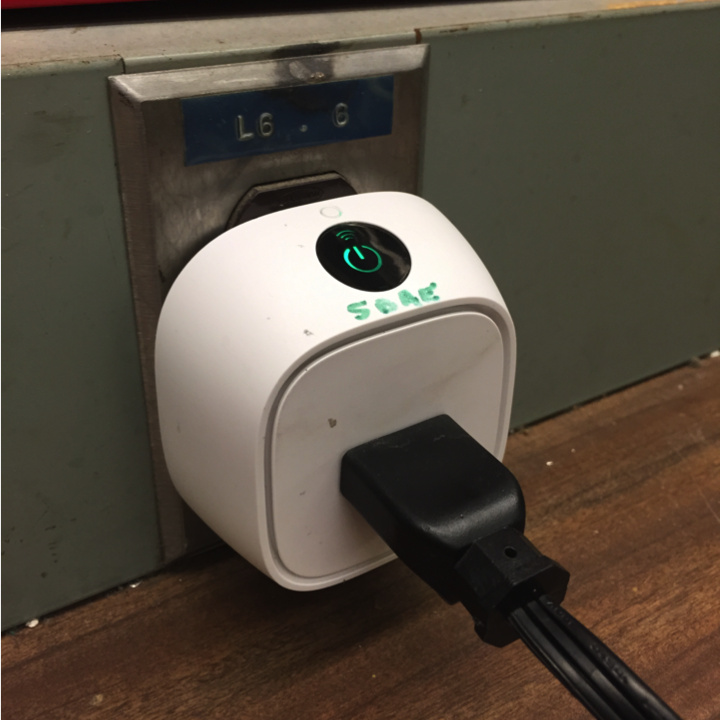
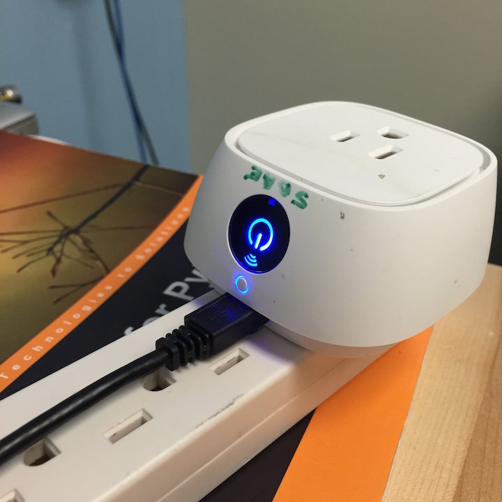
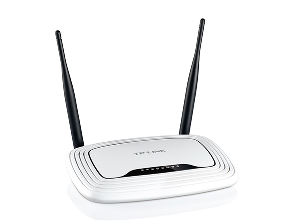
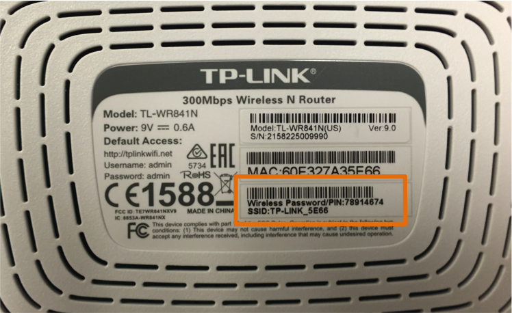
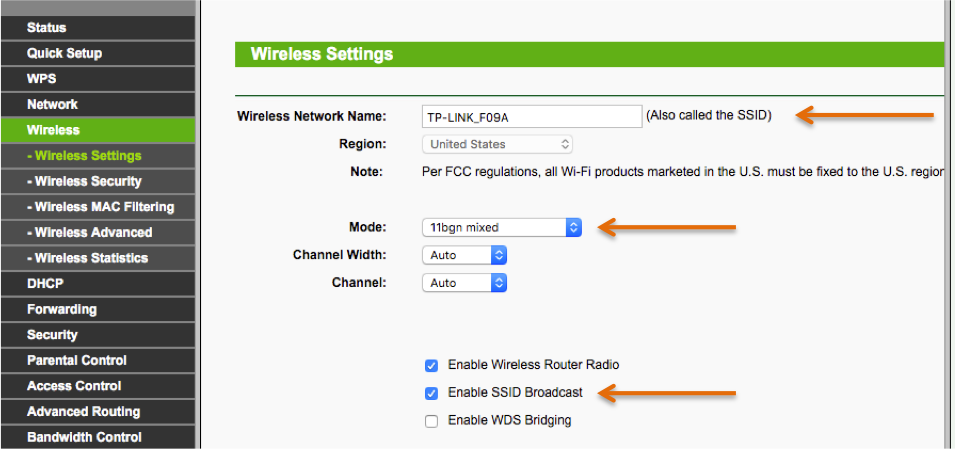
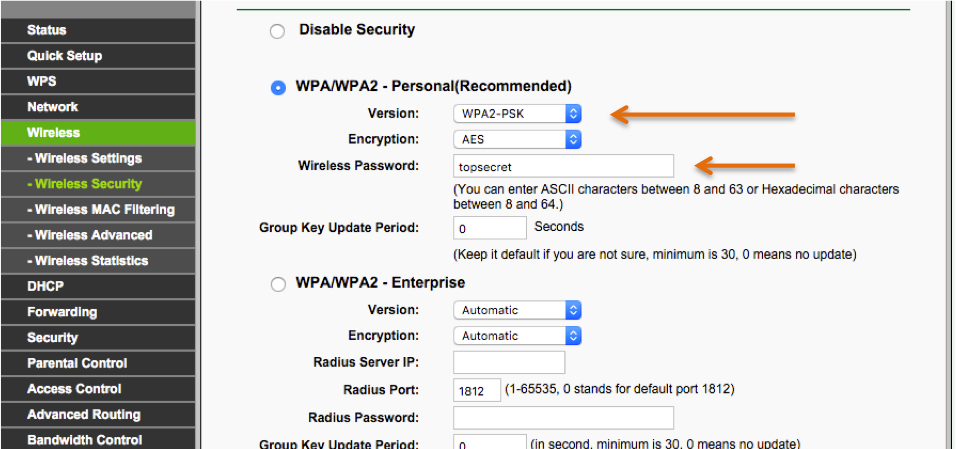
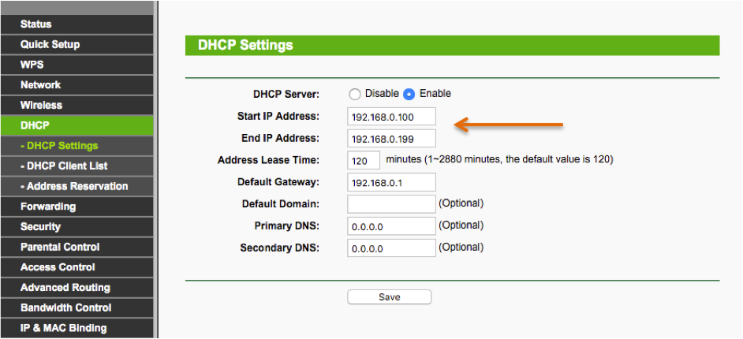
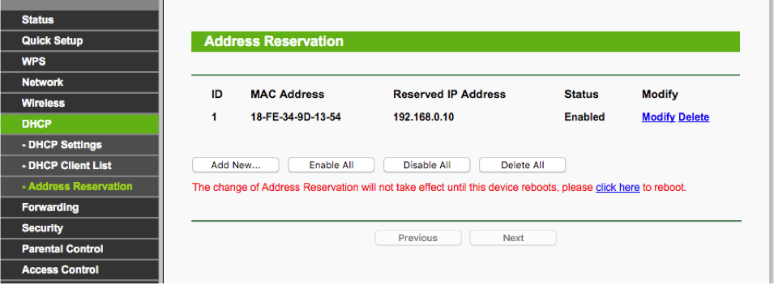
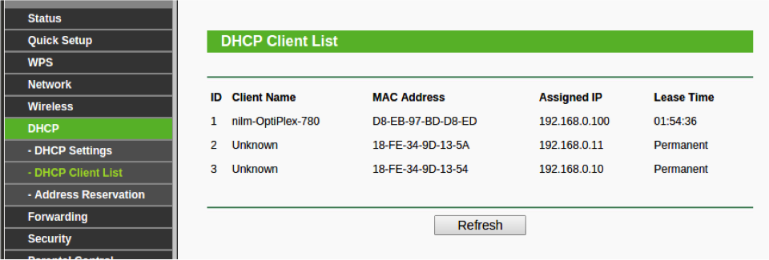

Introduction
The NILM smart plug is a WiFi-enabled plug with a software controlled relay and solid state power meter. These plugs
can be controlled over a wireless network or by USB. There are three main tools to interact with these plugs. The easiest tool
is the command line nilm-plug utility which can control most plug features over USB or WiFi. For more
advanced operation the plug has a terminal mode that is accessed using nilm-plug --cli. See Plug CLI for more details. Finally there is a set of python modules for scripting and integration with NILM filters. See Plug API for more details. In order to use the plugs on a network a wireless access point should be set up with MAC address reservations and static IP bindings for each plug. See the next section for details on configuring a wireless access point.

Smart Plug connected to a NILM over a wireless network. The green LED indicates the plug has authenticated to the network.

Smart Plug connected to a NILM by USB. Blue LED indicates an active USB communication between the NILM plug.
WiFi Setup
Any standard wireless access point can be used to interact with NILM smart plugs. This documentation covers the TP-Link TL-WR841N. A similar sequence of steps should work on most devices. When setup for the first time the router will advertise a default SSID. The network name and password can be found on the back of the router as shown the figure below. Open a browser and navigate to http://tplinkwifi.net. Authenticate with username [admin] and password [admin].

TP-LINK TL-WR841N Wireless Router

The default SSID and password are on the back of the router
Change the wireless network name (SSID). Do not use spaces in the name. If you are configuring multiple access points that will be
in close proximity make sure each has a unique name. Make sure the mode supports 802.11a, b and g. This is the default. The broadcast
SSID checkbox may be disabled if you do not want to advertise the presence of the network. This helps prevent people casually trying to connect
to the network. Note that this does not improve the security of the network. If you change the name of the network you will have to reconnect to the new SSID once the router restarts.

Configuring the wireless access point for NILM smart plugs
While not strictly necessary it is strongly recommended to enable wireless security. The plugs work best with WPA2 Personal. The authentication should be set to PSK (pre-shared key) and AES encryption. Select a strong password and save the settings. You will have to reconnect to the network using the new password.

Recommended security settings for the wireless access point.
The NILM smart plugs are controlled using their IP addresses. Wireless networks by default assign random addresses to each client. The router
must be configured to assign a consistent fixed address to each plug. Each plug as a unique MAC address which must be entered into the router to reserve an address. The first step is to make sure DHCP services are enabled on the router and set to a range of addresses that do not overlap with any other networks on the machine including contact meters. The default address space should work well for most configurations. The router will use a pool of the addresses in this space to assign to clients as they connect. This range is specified in the boxes highlighted below. You will need to assign IP addresses to the plugs that are outside of this range. Here the DHCP server will use addresses above *.100 leaving *.2-*.99 available for reservations. Note that *.0 and *.1 are reserved and should not be used for plugs.

Configuring DHCP services on the wireless access point.
Create and address reservation for each plug and record the mapping so that you will know which plug is attached to which address. Note that the format for the MAC address field is XX-XX-XX-XX-XX-XX. The first three octets are the organization identifier (OUI) and are the same for all the plugs. The last three are unique for each plug. The MAC address is labeled on the case of each plug.

Create address reservations for each plug. The address should not be in the DHCP dynamic address range.
Connect the host NILM either with WiFi or to one of the local (yellow) ethernet ports on the back of the router. If it is connected to the WAN port (blue) the NILM will not be able to communicate with the plugs. Once the NILM and plugs are configured you should see a status similar to the figure below. All of the plugs (recognizable by their OUI) should have reserved addresses and the computer should have a leased address.

The DHCP Client List shows the current address assignments. Plugs should have a reserved address (Permanent)
nilm-plug
The easiest way to interact with the NILM smart plug is with the nilm-plug command line utility. It can be used with USB or WiFi connected plugs. The program takes two arguments, an action and a device_address. If a single plug is connected over USB the address can be omitted because the system can find the plug automatically. When multiple plugs are connected by USB or plugs are connected over WiFi the address must be specified. For plugs connected by USB the address is /dev/ttyACM# where # is a number dynamically assigned to the plug by the operating system. Run ls /dev/ttyACM* before and after connecting the plug. The new entry is the plug's device_address. The device_address for wirelessly connected plugs is their IP address.
Read plug data
nilm-plug --read [--file filename] [plug_address]
This command retrieves meter data from the plug and stores the result in a comma seperated text (CSV) file. If no file is specified the output is written to the file plug.dat in the current directory. If the file exists, data is appended to the end. Each row of data has eight values specified below:
ts | vrms | irms | watts | pavg | pf | freq | kwh
- ts
- Timestamp in milliseconds since 1970 (UNIX time)
- vrms
- RMS voltage (V)
- irms
- RMS current (A)
- watts
- Current power usage (W)
- pavg
- 30 second average of power usage (W)
- pf
- Power Factor
- freq
- Line Frequency (Hz)
- kwh
- Energy used since last plugged in (kWh)
The plug collects data in one minute packets. The timestamp for each packet is displayed as it is retrieved from the plug. For plugs connected wirelessly only the most recent data packet is available. If a wireless plug is queried before a new packet is ready it will return an empty packet and the output file will remain unchanged. If a plug is connected by USB, the read command returns all of the data packets stored on the SD Card. If the output file already exists, only new data is appended to the end of the file. This command is designed to be run iteratively with each plug using a seperate output file.
If a plug is read wirelessly it still stores data to the SD Card which can be retrieved later over USB. This allows you to query the plug over an intermittent WiFi connection and fill in any missing data packets once the plug is connected by USB
Erase plug data (USB only)
nilm-plug --erase [plug_address]
This command erases all data from the plug's SD Card. Data can only be erased when a plug is connected by USB.
Read and erase plug data (USB only)
nilm-plug --read_erase [--file filename] [plug_address]
This command is identical to running read and then erase. This is the recommended command to use with USB plugs to prevent the SD card from filling up with data that has already been retrieved.
Control plug relay
nilm-plug --relay on|off [plug_address]
This command turns the plug on or off. If the requested relay state matches the current relay state this command is ignored. This works for both USB and WiFi plugs.
Display help and examples
nilm-plug --help
This command displays usage examples and a copy of this documentation.
Plug API
The Plug Application Programming Interface (API) allows you to control NILM smart plugs from Python scripts. Before you can use the API in a script you must import the nilmplug module:
This module contains a single object Plug. The constructor takes two arguments, the device_address and a flag to indicate whether this address is a USB device. The code below shows examples of both plug types:
The API provides methods to read meter data, control the relay and set the LED color over USB or WiFi. The plug data can be erased over USB.
Read plug data
This method returns a numpy array of data. The columns are described
here. If the plug has no new data this will return an empty array. The optional argument
last_ts limits the returned data to samples
after this timestamp. This can be helpful when you don't want to erase the data after reading it. Setting this value to the last timestamp received from the previous read will return only new data. Omitting this parameter will return
all data on the SD card.
Control plug relay
This method controls the plug relay. The parameter
value must be either
"on" or
"off". This method returns 0 on success or -1 on error. Errors can be caused by a poor WiFi connection.
Control plug LED
The method controls the multicolor LED. By default the LED is green when the plug is on and running normally, blue when it is actively connected over USB, and red if an error has occured.
The red, green, and blue parameters are 8 bit values (
0-255). Many online references provide common RGB color combinations. The blink value sets the blink rate in milliseconds. Set to
0 to disable blinking (solid).
Erase plug data (USB only)
This method removes all data from the plug's SD card. This method can only be used with USB connected plugs.
Plug CLI
NILM smart plugs provide a complete command line interface accessible with a standard terminal emulator. The nilm-plug program provides a built-in terminal interface that is started by using the --cli flag:
The following sections explain the commands available through this interface. You can also use the help in the CLI to see a brief summary of command options.
calibrate - start or stop calibration mode
Usage
calibrate
stop|start on_time off_time
Description
Run the plug in calibration mode. This disables data collection and toggles the relay with a duty cycle
of
on_time and off_time milliseconds. This is used to calibrate non-contact power meters. Use the
stop flag followed by the
restart command to return the plug to normal operation. This is a persistent setting which means that a plug will remain in calibration mode until set otherwise.
- action
- stop|start
- on_time
- duration the plug is on in milliseconds
- off_time
- duration the plug is off in milliseconds
config - get or set a configuration parameter
Usage
config action parameter [value]
Description
Retrieve or set the plug configuration parameters. Parameters are persistent and stored on the SD card. If a blank SD card is inserted into a plug the default parameters are empty strings unless otherwise specified. The last three parameters are used to support DHCP environments where neither the plug or the NILM IP addresses are fixed. If you are using IP address reservations as recommended in
WiFi Setup, these parameters should be left blank.
- action
- get|set
- parameter
- configuration parameter, see list below
- value
- new value of parameter, leave blank to clear parameter setting
Parameters
- wifi_ssid
- wireless network name
- wifi_pwd
- wireless network password. Leave blank for open network. (write only)
- standalone
- [true|false] If true, do not attempt to connect to a wireless network. Default is true
- serial_number
- unique string to indentify the plug
- nilm_id
- the NILM associated with this plug (optional)
- nilm_ip
- the IP address of the associated NILM (optional)
- mgr_url
- management website URL (optional)
Example
data - read or clear the data
Usage
data action
Description
Use this command to retrieve data packets stored on the SD card. The data is returned in the binary format described below and should only be used in scripts, not for printing to the terminal. If you want to view data from the command line, use the
meter command. Use the
erase flag to erase the data file.
Data is returned in packet chunks with the binary format shown below. End of file (EOF) is signaled by
a packet containing the character
x in every byte. See the plug.py source code for an example of how to parse this data structure in python.
rtc – get or set the real time clock (RTC) value
Usage
rtc get|set year month date dw hour min sec
Description
Get or set the value of the real time clock. The battery backed rtc is used to timestamp data collected by the plug. Query the current time using get, or set the time and specify the full date, see the arguments below:
Arguments
- get
- return the current time formatted as a string. If the battery fails this will report a corrupt date
- set
- set the clock value, all of the following parameters must be set to valid values for this command to execute successfully
- year
- year as a two digit number 2016 = 16
- month
- two digit value 0-12
- date
- two digit value 0-31
- dw
- day of week 0-7
- hour
- two digit value 0-24
- min
- minute as a two digit value 0-59
- sec
- second as a two digit number 0-59
Example
log - read or clear the log
Usage
log action
Description
The SD card records a persistent log of plug events. This includes network connectivity, general errors,
and system restarts. A
[general reset] occurs when the plug is connected to power and a
[software reset] is indicates the
restart command was used. Use the
clear flag to erase the log file.
relay - control the plug relay
Usage
relay action
Description
Control the plug relay to turn the connected appliance on or off. Executing this command with the
existing relay state has no effect.
Arguments
Advanced Commands
The following commands are specialized diagnostic tools that are less commonly used. They are listed alphabetically
collect_data - start or stop power logging
Usage
collect_data action
Description
Start or stop data collection from the power meter. By default the plug collects data from
the power meter. This command can be useful for debugging communication with the solid state
meter hardware.
Arguments
debug - set debug level
Usage
level
Description
Controls the verbosity of console information. Set to 5 to
see AT command traffic to the ESP8266. This is useful for diagnosing network connectivity issues.
Arguments
- level
- [0-5] Default is 0 (lowest). Level >=3 show wireless TX messages. Level >=4 echo ESP8266 AT traffic
Example
The wireless interface is controlled by a seperate ESP8266 module which communicates with the main processor through a UART with AT commands. The following shows the output of a successful wireless bootup. Note that the output of this debug session also displays the plug MAC address (
CIFSR:STAMAC). This should be labeled on the plug case but if it is not present use the combination of these two commands to find it.
echo - turn echo on or off
Usage
echo action
Description
Turn the prompt echo on or off. This can be useful when interacting with the plug via scripts. This
value is not persistent and defaults to on.
Arguments
led - set the led
Usage
led red green blue blink
Description
Set the LED color and control the blink rate. This overrides the default color but any change
to the system (eg, error or USB connect event) will change the LED back the system setting.
This is not a persistent setting, it resets to the system default on powerloss.
Arguments
- red
- [0-255]
- green
- [0-255]
- blue
- [0-255]
- blink
- blink rate in milliseconds, set to 0 for no blink. Maximum value is 65536.
ls - view files on SD Card
Usage
ls <no arguments>
Description
View SD card file statistics, similar to the standard linux
ls command. There should be three files. The timestamp is the last modified
date as recorded by the plug RTC. The files are:
- log.txt
- system log
- config.txt
- persistent configuration settings
- power.dat
- data collected by the plug power meter in binary format
memory - show memory statistics
Usage
memory <no arguments>
Description
The plug firmware dynamically allocates memory using a set of reserved blocks similar to a heap. This command is useful for debugging memory allocation. A steadily
increasing allocation percentage indicates a memory leak in the code.
Example
meter - view plug meter
Usage
meter <no arguments>
Description
Displays the last full data packet collected by the meter. If the meter is not collecting data an error message is displayed instead. This is a convience function for debugging see
data command for retrieving meter data.
restart - software reset
Usage
restart bootloader
Description
This command issues a soft reset to the processor. The optional bootloader
flag restarts the processor in SAM-BA bootloader mode. This should only be used when the plug needs to be reflashed over USB
Arguments
- bootloader
- boot into SAM-BA firmware this should only be used for reflashing the plug
version - firmware info
Usage
version <no arguments>
Description
Print the firmware version and compilation date. The firmware version is set by the VERSION_STR define in inc/monitor.h.
Example
wifi - turn wifi on or off
Usage
wifi action
Description
Turn the wifi system (ESP8266) on or off. The wifi system is turned on a system boot if
wifi_ssid!="" and standalone==false. Issuing this command with the
on will reset the wifi module and attempt to connect to the specified network. Use in conjunction with the
debug command to diagnose network connectivity issues.